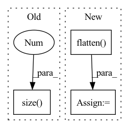

Pattern ID :3480
Before Change
def forward(self, pred, target):
log_prob = F.log_softmax(pred, dim=-1)
dist = torch.empty_like(pred).fill_(self.smoothing / (pred.size(-1 ) - 1))
dist.scatter_(dim=-1, index=target[..., None], value=(1 - self.smoothing))
loss = F.kl_div(log_prob, dist)
return lossAfter Change
def forward(self, pred: torch.Tensor, target: torch.Tensor, mask: torch.Tensor):
pred = pred.flatten(0, 1)
target = target.flatten(0, 1)
mask = mask.flatten( 0, 1) .float()
chunked_pred = torch.chunk(pred, chunks=self.chunk, dim=0)
chunked_target = torch.chunk(target, chunks=self.chunk, dim=0)
chunked_mask = torch.chunk(mask, chunks=self.chunk, dim=0)
log_prob = [F.log_softmax(p, dim=-1) for p in chunked_pred]
loss = [self.smoothed_loss(p, t, m)[None]\
for p, t, m in zip(log_prob, chunked_target, chunked_mask)]
loss = torch.cat(loss, dim=0).sum()
return loss / mask.sum()In pattern: SUPERPATTERN
Frequency: 4
Non-data size: 3
Instances Fragment ID: 17567468
Project Name: rick-mccoy/reformer-pytorch
Commit Name: 3411114d22e0bfcae2e106f5c82a3211da83f409
Time: 2020-02-29
Author: rickmccoy3141@gmail.com
File Name: model/labelsmoothing.py
M Class Name: LabelSmoothing
N Class Name: LabelSmoothing
M Method Name: forward(4)
N Method Name: forward(3)
M Parent Class: nn.Module
N Parent Class: nn.Module
M File Name: model/labelsmoothing.py
N File Name: model/labelsmoothing.py
M Start Line: 11
M End Line: 16
N Start Line: 13
N End Line: 24
Before Change
rec_features.append(rec_feature[:, :inputs[i].size(1)])
else:
rec_features.append(rec_feature[:, \
inputs[i-1].size(1 ) :inputs[i-1].size(1)+inputs[i].size(1)])
"""
if i == 0:
rec_features.append(rec_feature[:, :outs[i].size(-1)])After Change
fuse = self.fuse(outs, training=training)
logit = self.head(fuse, training=training)
sizes = [torch.flatten( ii,start_dim=1) .size(1) for ii in inputs]
rec_features = []
if training:
rec_feature = self.refiner(fuse, training=training)
curr=0
for i in range(input_num):
if self.has_padding:
if i == 0:
rec_features.append(rec_feature[:, :inputs[0][i].size(1)])
else:
rec_features.append(rec_feature[:, \
inputs[0][i-1].size(1):inputs[0][i-1].size(1)+inputs[i].size(1)])
else:
if i == 0:
rec_features.append(rec_feature[:, :sizes[0]])
curr = sizes[0]
else:
rec_features.append(rec_feature[:, \
curr:curr+sizes[i]]) Fragment ID: 17567461
Project Name: pliang279/multibench
Commit Name: 72e3344b766884b9160fd383b13945be06819481
Time: 2021-06-05
Author: blairc@andrew.cmu.edu
File Name: training_structures/Contrastive_Learning.py
M Class Name: MMDL
N Class Name: MMDL
M Method Name: forward(3)
N Method Name: forward(3)
M Parent Class: nn.Module
N Parent Class: nn.Module
M File Name: training_structures/Contrastive_Learning.py
N File Name: training_structures/Contrastive_Learning.py
M Start Line: 39
M End Line: 52
N Start Line: 37
N End Line: 56
Before Change
x = self.layer4(x)
x = self.bn4(x)
x = self.dropout(x)
x = x.view(x.size(0 ) , -1)
x = self.fc5(x)
x = self.bn5(x)
After Change
x = self.pool(x)
x = self.bn4(x)
x = self.dropout(x)
x = self.flatten( x)
x = self.fc5(x)
x = self.bn5(x)
return x Fragment ID: 17567441
Project Name: yeyupiaoling/voiceprintrecognition-pytorch
Commit Name: 1b3e522b8bc2c0002ef6447094f8f57c6e4bdabe
Time: 2021-07-03
Author: yeyupiaoling@foxmail.com
File Name: utils/resnet.py
M Class Name: ResNetFace
N Class Name: ResNet
M Method Name: forward(2)
N Method Name: forward(2)
M Parent Class: nn.Module
N Parent Class: nn.Module
M File Name: utils/resnet.py
N File Name: utils/resnet.py
M Start Line: 117
M End Line: 118
N Start Line: 102
N End Line: 106
Before Change
self.dense = nn.Linear(self.out_filters, self.num_classes)
def forward(self, x):
bs = x.size(0 )
cur = self.stem(x)
layers = [cur]
After Change
cur = layers[-1]
cur = self.gap(cur)
cur = self.flatten( cur)
cur = self.dropout(cur)
logits = self.dense(cur)
return logits
Fragment ID: 17567459
Project Name: ain-soph/trojanzoo
Commit Name: dfd1ce6e0caa7a5c2c58e1b5d01c8df8df251d69
Time: 2021-03-23
Author: ain-soph@live.com
File Name: trojanvision/utils/model_archs/enas/macro.py
M Class Name: GeneralNetwork
N Class Name: GeneralNetwork
M Method Name: forward(2)
N Method Name: forward(2)
M Parent Class: nn.Module
N Parent Class: nn.Module
M File Name: trojanvision/utils/model_archs/enas/macro.py
N File Name: trojanvision/utils/model_archs/enas/macro.py
M Start Line: 70
M End Line: 83
N Start Line: 74
N End Line: 82